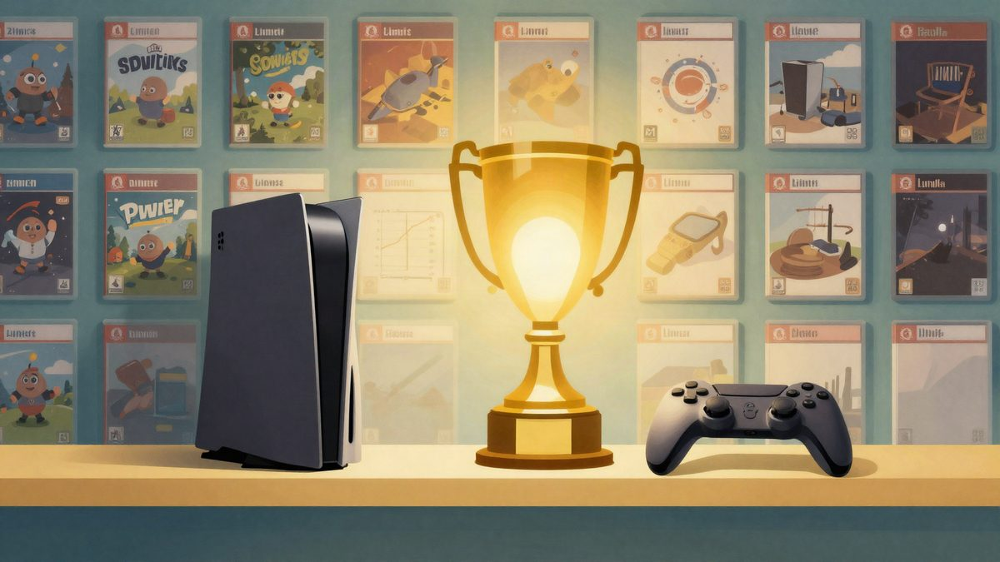

Marcello Malta prvi je Xbox igrač s 10 milijuna bodova za postignuća

Brazilac Marcello Malta, poznat kao SiegfriedX, prvi je Xbox igrač koji je dosegnuo 10 milijuna Gamerscore bodova. Do cilja je išao 20 godina i odigrao više od 6.400 igara, a posljednje postignuće otključao je 9. rujna 2026. u igri Final Fantasy VII Rebirth.
Brazilski igrač Marcello Malta, na Xboxu poznat kao "SiegfriedX", postao je prvi igrač na svijetu s 10 milijuna bodova za postignuća (Gamerscore). Cilj je dosegnuo 9. rujna 2026. Tada je u igri Final Fantasy VII Rebirth prešao igru na najvišoj težini i otključao postignuće vrijedno 110 bodova.
Malta ima 42 godine i radi kao sistemski analitičar. Postignuća skuplja od ere Xboxa 360, a to je već 20 godina. Odigrao je više od 6.400 igara, a od 2020. svaki dan otključa barem jedno postignuće, šest godina zaredom. Xbox je s njim napravio intervju u kojem je opisao kako je došao do tog broja.
Sustav postignuća
Xbox postignuća uvedena su 2005. s konzolom Xbox 360. Bodovi se dobivaju za prelazak igre, teže izazove, skupljanje predmeta ili ciljeve u multiplayeru. Osnovni dio većine igara nosi ukupno 1.000 bodova, a dodatni sadržaj može taj iznos povećati.
Malta kaže da je sustav otkrio slučajno, kad je u igri ugledao obavijest o postignuću. Počeo ga je proučavati i zainteresirao se. Još dok je igrao Nintendove igre, navikao je skupljati i dovršavati sve što igra nudi. Kaže da će nastaviti raditi na postignuću čak i ako vrijedi samo 10 bodova, a traje 500 sati.
Završni korak i najteži izazovi
Da bi 10 milijuna bodova imalo posebno značenje, Malta je odabrao Final Fantasy VII Rebirth, igru koju voli. Cilj je dosegnuo sa svih 1.000 bodova iz te igre, a posljednje postignuće bio je prelazak na najvišoj težini.
Jednim od najtežih izazova smatra skupljanje velikih i malih zlatnih kruna u igri Monster Hunter: World. Treba uloviti najveći i najmanji primjerak svakog čudovišta. Veličina je nasumična, pa je za sva povezana postignuća u osnovnoj igri i dodatku Iceborne potrošio oko 600 sati. Među najdražim igrama s potpunim postignućima izdvaja Diablo II: Resurrected.
Što je ostalo
Malta trenutačno igra novi nastavak serije Gears of War. Do titule Mythic nedostaju mu dva zadatka: više od 25.000 ubojstava u natjecateljskom modu i 50.000 ubojstava u modu Horde. U njegovoj kolekciji još je 42 igre u kojima nema svih 1.000 bodova ni Mythic statusa.
Igračima koji također skupljaju postignuća savjetuje da se ne vežu previše uz ljestvice i bodove. Smatra da je igranje prije svega zabava. Preporučuje ravnotežu između teških postignuća i igara koje igrač stvarno voli, kako zbog jurnjave za bodovima ne bi izgubio užitak u igranju.
Izvor: cnBeta
Povezani članci
 Forza Horizon 6: igrač u Drivataru susreo preminulog prijatelja, objava ima 1,75 milijuna lajkova17. studenoga 2026.
Forza Horizon 6: igrač u Drivataru susreo preminulog prijatelja, objava ima 1,75 milijuna lajkova17. studenoga 2026. Tokoronyori je najavio igru renal spring: Focus as a Kidney za Steam početkom 2027.25. studenoga 2026.
Tokoronyori je najavio igru renal spring: Focus as a Kidney za Steam početkom 2027.25. studenoga 2026. Igrač Among Usa i njegova majka pomogli su FBI-ju pronaći 17-godišnjakinju koja je nestala prije više od godinu dana24. studenoga 2026.
Igrač Among Usa i njegova majka pomogli su FBI-ju pronaći 17-godišnjakinju koja je nestala prije više od godinu dana24. studenoga 2026.